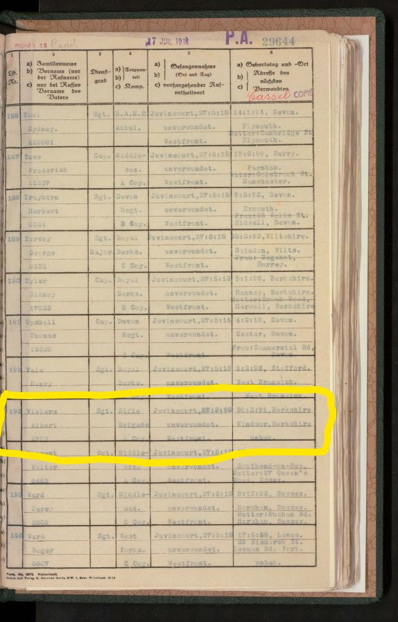
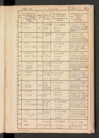
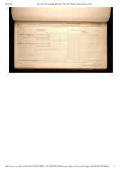

Albert Edward Vickers
The following buttons will take you to the monthly War Diaries for the 10th Battalion The Rifle Brigade. It was this battalion that Albert joined in 1914 and stay with them up to the time ie was wounded.It is on that basis that the diaries stop at May 1916. We know that he was in Hospital in Kent for Christmas 1917, which would suggest his injuries were quite significant. The diaries then restart in January 1918, when it is believed he rejoined, the 2nd Battalion The Rifle Brigade which had consolidated some of the 10th Battalion by this time.
The next set of buttons will take you to the war diaries from January 1918 through to May 1918 when Albert was taken Prisoner of war, but also cover the period when he was awarded the Military Medal, and although he is not mentioned specifically the entry does provide a view of the circumstances at that time.
The 2nd Battalion The Rifle Brigade
Military Document Gallery
Gazette Supplement
.pdf/TN_gazette_suppliment_19180910-01.jpg)
Sept 1918
.pdf/TN_gazette_suppliment_19180910-19.jpg)
Sept 1918 page 19
POW Records


Crossen a/Oder Record page 1

Crossen a/Oder Record
Medal Card
